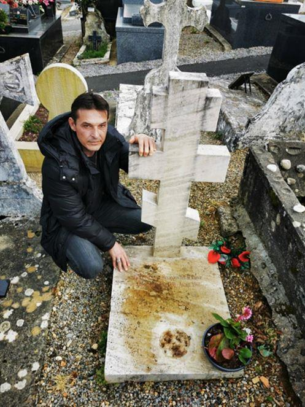
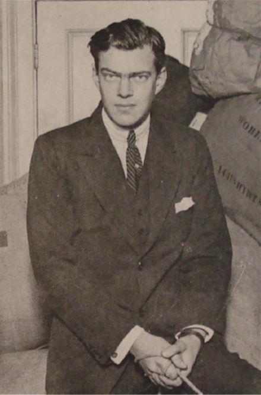
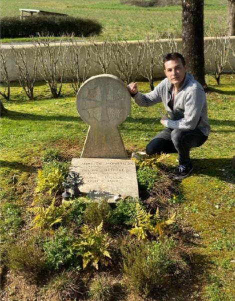
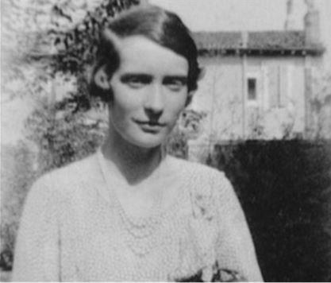
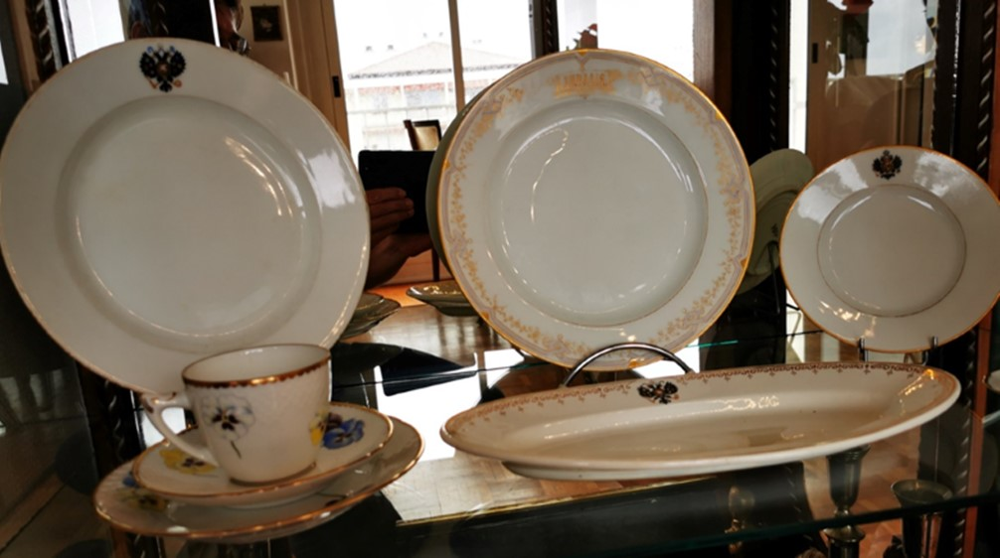
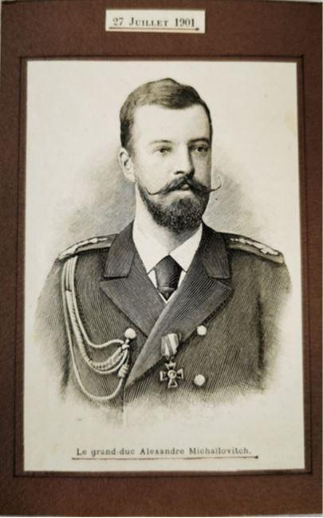
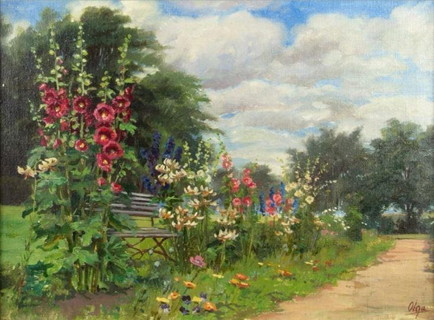
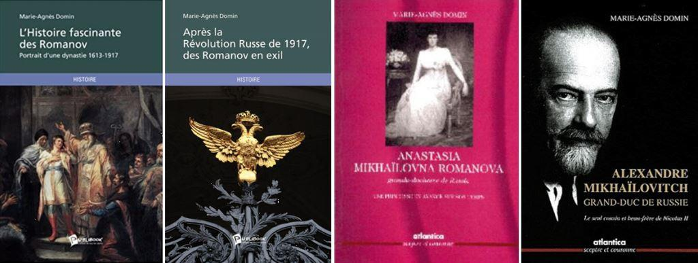
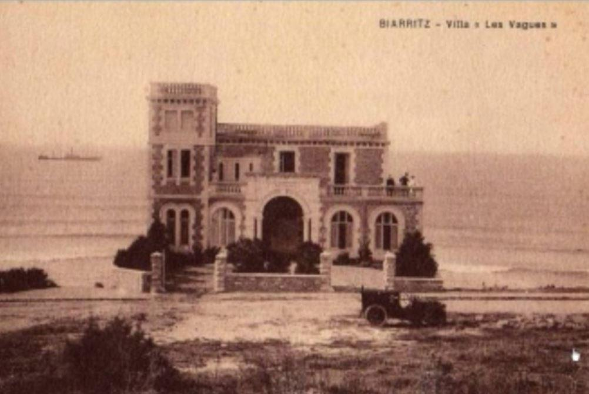

Créée à l’initiative de Nikolaï Singier-Kurzwa, cette association a pour objectif premier de pouvoir retrouver les sépultures des immigrés russes au Pays Basque et dans les provinces gasconnes environnantes, afin de les honorer voire de procéder à leur restauration et même de racheter les concessions à l’abandon. D’autre part, la promotion de manifestations culturelles permettra de faire revivre le passé prestigieux de Biarritz et de toute la région lorsque s’y était fixée, au XIXe siècle, une importante communauté russe, comprenant des membres de la famille Impériale Russe et de grandes figures issues de la Noblesse Russe. Après la chute du régime impérial et la Révolution, certains d’entre eux choisirent comme terre d’exil cette région qu’ils aimaient tant.
C’est le 3 mai 2021, date choisie au plus près de la Pâque Orthodoxe, au cours d’un déjeuner « russe » en Basse-Navarre chez le consul (h) de Russie à Biarritz Alexandre Miller de la Cerda et son épouse Madame Anne de Miller de la Cerda, comtesse Tolstoï, formant avec le comte d’Arcangues le comité d’honneur, qu’a été signée la patente constitutive de l’association Mémoire et culture de Russie / Русское наследие в баскском и гасконском краях, en présence de Monsieur Nikolaï Singier Kurzawa, le Président, accompagné de Madame Marie-Agnès Domin, la secrétaire-trésorière.
Alexandre Miller de la Cerda, consul honoraire de Russie à Biarritz, est issu d’une prestigieuse famille qui a écrit l’une des pages les plus brillantes dans les relations diplomatiques entre la Russie et la France du XVIIIème siècle jusqu’à nos jours. Son grand-père, Alexandre von Miller, fut chambellan de l’empereur Nicolas II, maréchal de la noblesse de Kovno (Kaunas), président de Varsovie et ami de Stolypine. Il est l’auteur de nombreux ouvrages, dont La Tournée des Grands-Ducs, Les Russes sur la côte Atlantique, paru aux Éditions Atlantica, « Un livre exceptionnel par l’originalité de son propos et la galerie des personnages qu’il nous présente », dit le Prince Dimitri Schakhovskoy dans la préface qu’il lui a consacrée. Il a, dans le passé, organisé de prestigieuses manifestations à Biarritz, dont « La nuit des grands-ducs » en 1967, faisant revivre le Bal Impérial à l’hôtel du Palais, en présence du grand-duc et de la grande-duchesse Wladimir de Russie.
Depuis de nombreuses années, Nikolaï Singier-Kurzawa, titré marquis de Flines, est passionné par l’histoire des Romanov. Il faut dire que son arrière-grand-père était un personnage éminent à la cour du Tsar, puisqu’on le considérait comme le « bras droit » de Nicolas II. Il n’est donc pas étonnant que, dès son arrivée à Bayonne il y a une vingtaine d’années, il se soit intéressé de près à l’histoire des Russes au Pays Basque. Il est tout d’abord allé à la recherche des tombes de personnages connus et c’est en constatant l’état de délabrement de celles-ci que lui est venue l’idée de les recenser pour les remettre en état.

Nikolaï-Singier Kurzawa sur la tombe du prince Feodor Alexandrovitch de Russie

Le prince Feodor Alexandrovitch de Russie

Nikolaï-Singier Kurzawa sur la tombe de la princesse Paley, épouse du prince Feodor Alexandrovitch de Russie
Dans le même temps, il a commencé à rassembler de magnifiques objets, des livres, des lettres, des photos, des bijoux, des tableaux, etc. qui avaient appartenu aux membres de la famille impériale Russe.

Ensemble de porcelaines ayant appartenu à Nicolas II et quelques autres porcelaines peintes par Olga Alexandrovna sa sœur cadette (Collection privée Romanov de Nikolaï Singier-Kurzawa)

Gravure d'époque (Collection privée Romanov de Nikolaï Singier-kurzawa) :
Alexandre Mikhaïlovitch (en russe : Александр Михайлович Романов dit « Sandro » (Сандро)), né le 1er avril 1866 à Tiflis et mort le 26 février 1933 à Roquebrune, est un prince russe de la dynastie des Romanov.
Amiral de la flotte de la Russie impériale (1915), il est adjudant-général (1909), président du Conseil pour la Marine marchande de 1900 à 1902, membre honoraire de l’Académie navale Nikolaïevsky (1903), l’un des fondateurs de l'Armée de l'air impériale russe, l’un des initiateurs de l’École de l’air à Sébastopol (1910) et inspecteur général de l’aviation militaire russe (1916)
Le grand-duc Alexandre Mikhaïlovitch est membre de la dynastie Romanov qui règne sur la Russie de 1613 à 1917.
Quatrième des six fils du grand-duc Michel Nicolaïevitch de Russie et de la grande-duchesse Olga Fiodorovna, née Cécile de Bade, il est un des nombreux petits-fils du tsar Nicolas Ier et de la tsarine Alexandra Feodorovna, née Charlotte de Prusse.
Le 6 août 1894, au palais de Peterhof, le grand-duc Alexandre épouse la grande-duchesse Xenia Alexandrovna (1875-1960), sœur du tsar Nicolas II.
Sa première acquisition est une remarquable peinture réalisée par la grande-Duchesse Olga Alexandrovna Romanova, sœur cadette de Nicolas II. Toutes ses acquisitions sont visibles sur son site : Collection privée Romanov de Nikolaï-Singier Kurzawa.
C’est depuis son adolescence, que l’auteur de ces lignes nourrit une passion pour la Russie et plus particulièrement pour les Romanov, qui l’ont conduit à faire des recherches et découvrir certains personnages fascinants de la famille impériale Russe.
Mise en contact avec des descendants de la grande-duchesse Anastasia Mikhaïlovna Romanova, un premier écrit voit le jour fin 2002 : Anastasia Mikhaïlovna Romanova, grande-duchesse de Russie, une princesse en avance sur son temps, paru aux Éditions Atlantica. Ayant été présentée au prince Michel Romanoff de Russie, qui à cette époque avait quitté Biarritz, il préface son livre et lui confie les mémoires écrites par son grand-père, le grand-duc Alexandre Mikhaïlovitch, « Sandro », bien connu à Biarritz dès les années 1906. Il était le frère de la grande-duchesse Anastasia Mikhaïlovna Romanova. Cela donne naissance à un deuxième ouvrage Alexandre Mikhaïlovitch, grand-duc de Russie. Le seul cousin et beau-frère de Nicolas II, paru aux Éditions Atlantica, que son petit-fils le prince Michel préface également.
La passion des Romanov et de l’écriture ne s’éteignant pas d’autres ouvrages vont suivre : Après la Révolution Russe, des Romanov en exil et L’Histoire fascinante des Romanov, Portrait d’une dynastie, Ed. Publibook, Cecilie la dernière Kronprinzessin de Prusse. Autoédition.
Cette passion commune que nous avons Nikolaï et moi-même pour cette illustre famille au destin prestigieux, mais aussi tragique, ce qui nous émeut profondément, nous a conduit à l’écriture en commun d’un nouvel ouvrage, L’amour des Romanov, pour ne pas oublier, que nous espérons publier d’ici la fin de l’année. D’autres projets d’écriture suivront.
La vocation de l’association étant de faire connaître ce prestigieux passé qui a illuminé la Côte Basque, nous aurons à cœur d’organiser différentes manifestations culturelles qui prendront diverses formes : conférences, colloques, expositions d’art, dans des lieux prestigieux, mais aussi des visites de lieux emblématiques. Ainsi, comme dans un rêve, nous cheminerons sur les traces de ces grands personnages ayant laissé leur merveilleuse empreinte dans la région. Et notre grand rêve est de pouvoir rétablir un jour le sublime Bal des grands-ducs.

Villa « Les Vagues » du grand-duc Alexandre Mikhailovitch
(Collection privée Nikolai Singier-Kurzawa)
Ces projets ne pourront voir le jour que lorsque l’association comportera un nombre de membres suffisant pour les mener à bien et c’est la raison pour laquelle nous avons besoin de votre soutien, en souhaitant que vous soyez conquis par les thèmes de nos réalisations, que nous nous efforcerons de choisir avec un soin particulier. Nous vous informons qu’un groupe a été constitué sur Facebook, Mémoire et Culture de Russie, où nous publions différents articles et pour toute demande de renseignements, vous pouvez nous joindre à l’adresse suivante : memoire.culturerusse35@gmail.com.
Partager cette page